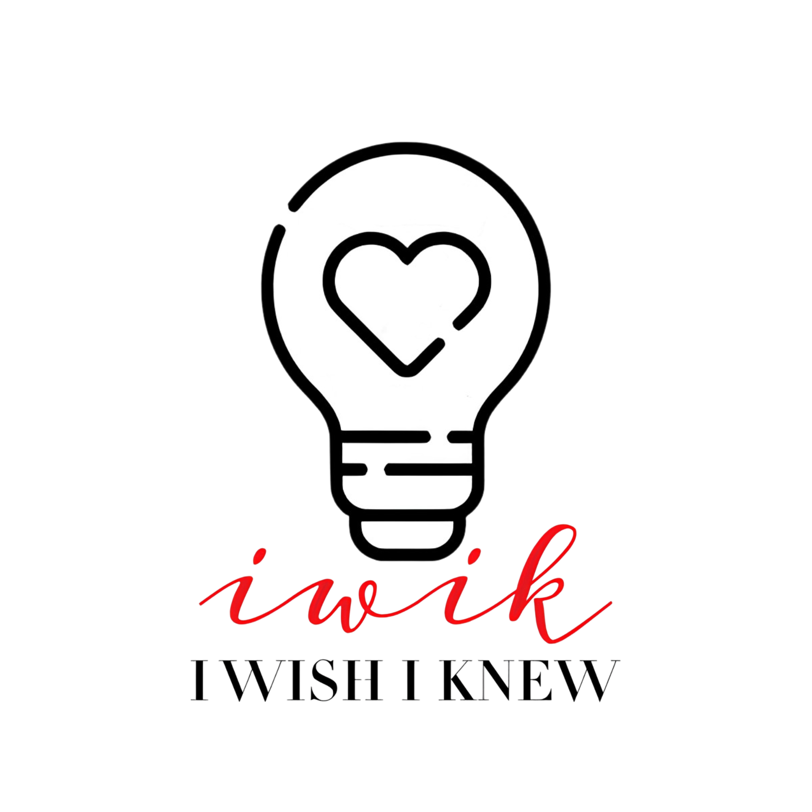

I Wish I Knew is a federal 501(c)(3) public charity built on the foundational mission of doing good, spreading good, and fostering community connection. We create, support, and deploy projects designed to uplift individuals and inspire universal reciprocity.